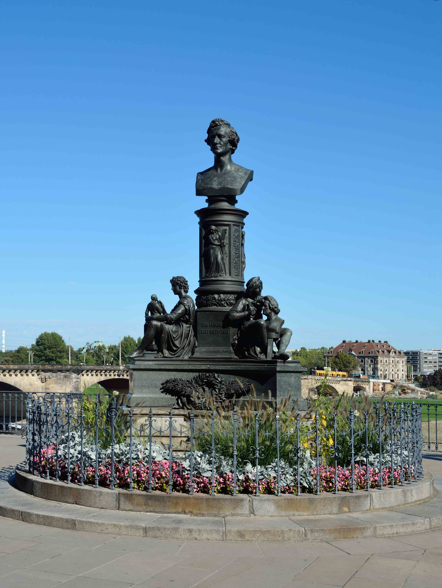

Eine gewisse entfernte Verwandtschaft zwischen Ernst Gottlieb Ziegenbalg und dem Autor dieser Seiten zeigt sich in den Linien der jeweiligen Stammbäume.
Wie die folgenden Ausführungen zeigen, gibt es darüber hinaus eine gewisse Verwandtschaft zwischen (den in Dresden wohlbekannten) Mitgliedern der Familien Rietschel, Fichte und Ziegenbalg.
Ernst Friedrich August Rietschel (* 15. Dezember 1804 in Pulsnitz; † 21. Februar 1861 in Dresden) war ein deutscher Bildhauer des Klassizismus. Seine Hauptwerke sind das Friedrich-August-I.-Denkmal (1843) in Dresden, das Relief an der Königlichen Oper (1844) in Berlin, das Goethe-Schiller-Denkmal (1857) in Weimar, die Quadriga auf dem Herzoglichen Schloss (1863) in Braunschweig und das Luther-Denkmal (1868) in Worms.
Ernst Rietschel

Johann Gottlieb Fichte (* 19. Mai 1762 in Rammenau, Kurfürstentum Sachsen; † 29. Januar 1814 in Berlin, Königreich Preußen) war ein deutscher Philosoph. Er gilt neben Friedrich Wilhelm Joseph Schelling und Georg Wilhelm Friedrich Hegel als bedeutendster Vertreter des Deutschen Idealismus.
Wikipedia: Johann Gottlieb Fichte
Bartholomäus Ziegenbalg (* 10. Juli 1682 in Pulsnitz; † 23. Februar 1719 in Tranquebar) war ab 1706 der erste deutsche evangelische Missionar in Indien. Er kam mit der Dänisch-Halleschen Mission nach Südindien, erlernte die tamilische Sprache und übersetzte die Bibel, die als sogenannte Tranquebar-Bibel 1713 herauskam. Er gründete Schulen, ein Kinderheim und 1707 die erste evangelisch-lutherische Tamilgemeinde in Tranquebar, wo er auch die Neue Jerusalems-Kirche[1] erbauen ließ.
Wikipedia: Bartholomäus Ziegenbalg
Sei Sohn Ernst Gottlieb Ziegenbalg studierte Mathematik in Tübingen, übersetzte die Elemente des Euklid in die Dänische Sprache und war als Professor für Mathematik in Kopenhagen tätig.
Ernst Gottlieb Ziegenbalg
Zum Ursprung des Namens Ziegenbalg
Wie viele andere Namen (Müller, Schneider, Schuster, ...) entwickelte sich der Name aus einer Berufsbezeichnung:
"Ziegenbalg" entwickelte sich im sächsisch-lausitzer Sprachgebiet aus einer Zusammensetzung von Wörtern aus dem Arbeitsbereich des Schmieds:
Zcegenbalck / Zceg en balck / Zceg an balg / Zig en balg / Ziegenbalg
Bedeutung: Zieh den (Blase-) Balg